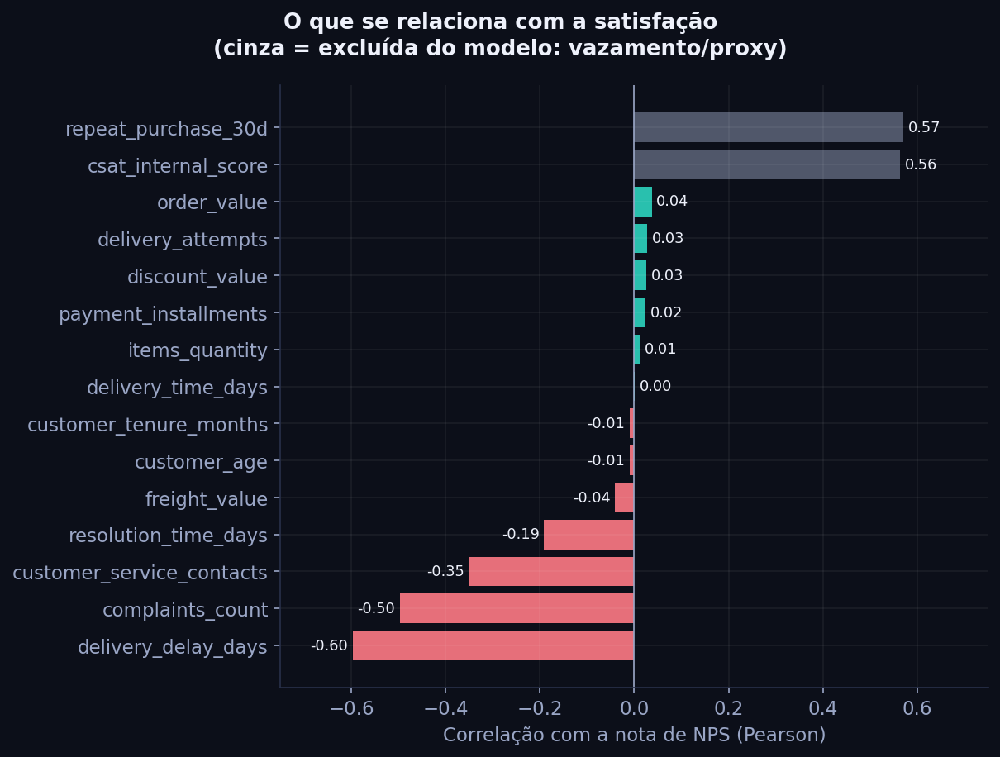
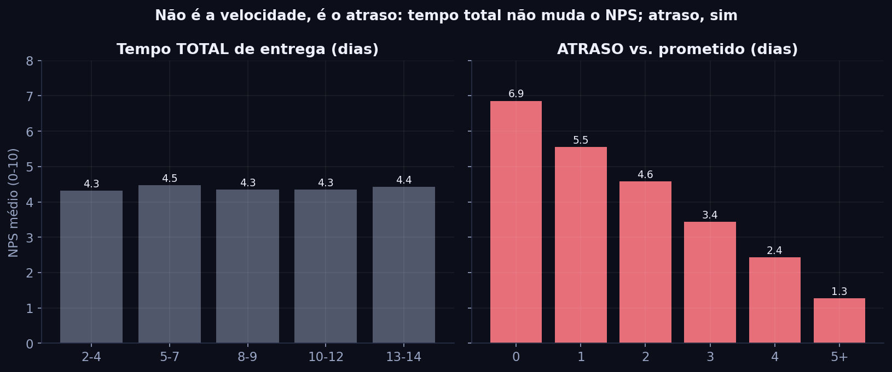
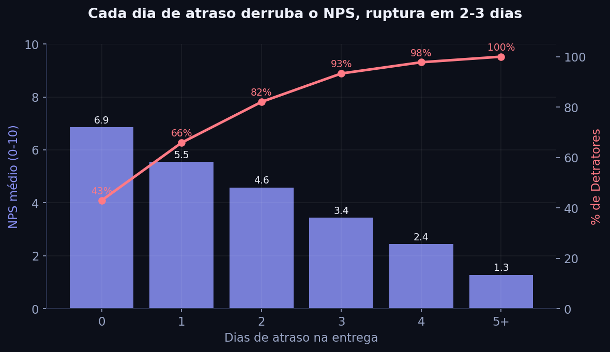

Prevendo a satisfação do cliente (NPS) antes da pesquisa, com dados de pedido, entrega e atendimento.
Kevin Barreto da Silva · apresentação para gestores e stakeholders
Para cada cliente que elogia a marca, há mais de doze que reclamariam. É o padrão da operação hoje.
Quais fatores operacionais mais influenciam a satisfação, e como agir antes da pesquisa de NPS?
Dá para prever, só com dados operacionais, quem vai virar detrator a tempo de evitar?
Idade, região e valor do pedido quase não importam. O que move o NPS é entrega e atendimento — exatamente o que a gente controla.
Perfil e preço ≈ zero de correlação
Demorar não irrita. Quebrar a promessa de prazo, sim. Cumprir o prazo combinado vale mais do que ser rápido.
Tempo total de entrega: quase não muda a nota
Aos 2 dias de atraso já são 82% de detratores; a partir de 3 dias, passa de 90%. No prazo, 1 em cada 4 vira promotor.
A experiência desaba entre 2 e 3 dias
Deixamos de fora dados que entregam a resposta (como a recompra em 30 dias) para o modelo ser honesto e usável de verdade.